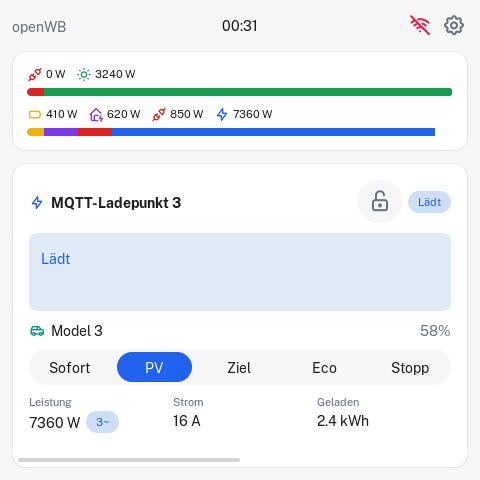
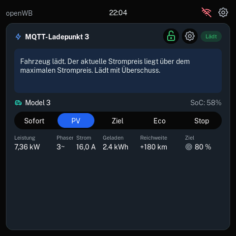
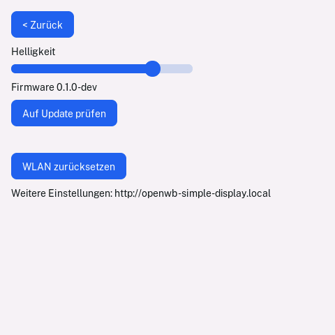
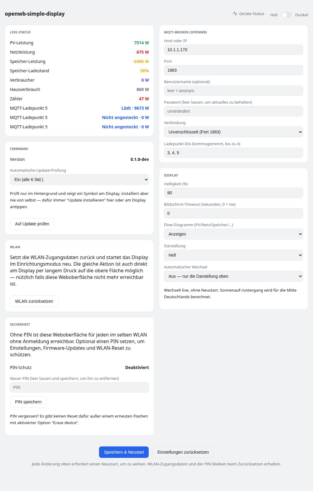

openwb-simple-display
Ein kleines ESP32-S3-Touchscreen-Display für openWB- Ladestationen: Ladepunkt-Status auf einen Blick, Touch-Steuerung von Lademodus, Ladestrom und Sperrzustand — ohne App, ohne Cloud, direkt über MQTT mit deiner eigenen openWB-Installation verbunden.


Funktionen
- Live-Status: PV, Netz, Speicher, Verbraucher und jeder Ladepunkt auf einen Blick
- Touch-Steuerung: Lademodus, Ladestrom, Sperren/Entsperren direkt am Display
- Lokale Weboberfläche für Geräteeinstellungen, erreichbar per Browser im eigenen Netzwerk
- Firmware-Installation und -Updates direkt im Browser, ohne Toolchain
Voraussetzungen
Eine laufende openWB2-Installation (MQTT-basierte Software), deren MQTT-Broker im lokalen Netzwerk erreichbar ist. Standardmäßig ist das ohne weitere Konfiguration auf openWB-Seite der Fall.
Installation
Firmware direkt im Browser flashen — mit Chrome oder Edge, ohne Software-Installation.
- Display per USB-C-Datenkabel (kein reines Ladekabel) mit dem Computer verbinden.
- Unten auf „Firmware installieren" klicken und im Browser-Dialog den seriellen Port des Displays auswählen.
- „Install" wählen und warten, bis der Flash-Vorgang abgeschlossen ist (ca. 1–2 Minuten).
Einrichtung
- Nach dem Flashen zeigt das Display ein eigenes WLAN namens
openwb-simple-display-setup— mit dem Handy oder Computer damit verbinden. - Im sich öffnenden Einrichtungsassistenten das eigene WLAN sowie Host, Port, Benutzername und Passwort des openWB-MQTT-Brokers eintragen.
- Das Display startet neu, verbindet sich und zeigt innerhalb weniger Sekunden die Live-Daten des konfigurierten Ladepunkts.
- Weitere Einstellungen (Helligkeit, Firmware-Updates, optionaler PIN-Schutz)
über die lokale Weboberfläche unter
http://openwb-simple-display.local.
Einstellungen
Helligkeit und Firmware-Updates direkt am Display, alles andere (MQTT-Broker, Bildschirm-Timeout, PIN-Schutz, WLAN-Reset) über die lokale Weboberfläche.


Hardware
Quellcode
MIT-lizenziert. Quellcode auf GitHub.
Dies ist kein offizielles Produkt der openWB GmbH & Co. KG. Der Autor arbeitet jedoch eng mit dem openWB-Team zusammen und entwickelt auch darüber hinaus Software für das Projekt.